O que o sistema faz
O Escala responde a uma pergunta por pessoa e por dia: quem está onde.
Você descreve as regras uma vez — quantos lugares cada unidade tem, quem é de qual equipe, que percentual da presença de cada pessoa vai para cada unidade, quem tem home office, quem cobre qual posto interno, quem está de férias. O sistema monta o mês inteiro a partir disso, mostra o que vai acontecer antes de gravar, e só publica quando você mandar.
Depois de publicada, a escala vira a referência da equipe: cada pessoa vê a própria, pede troca, folga ou férias por ali, e o pedido percorre triagem e aprovação sem passar por planilha nem e-mail. O que for aprovado volta para dentro da escala. Publicada não quer dizer congelada — Planejamento e gestor ainda ajustam o que a realidade pedir, e cada ajuste avisa quem depende dele. O que não cabe na escala, mas a equipe precisa saber, vai para o mural de comunicados.
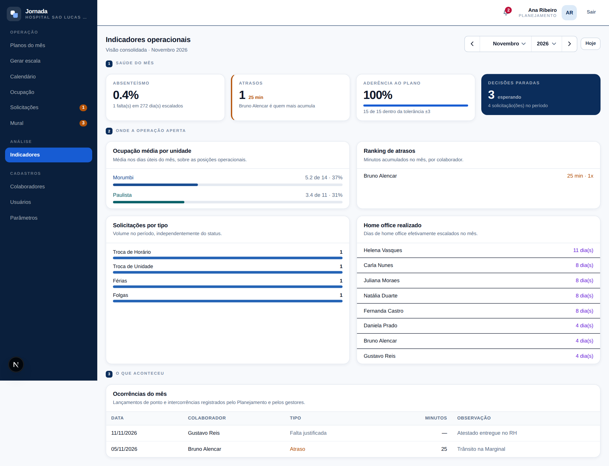
Os três papéis
Cada pessoa tem exatamente um papel, e é ele que decide o que ela vê e o que pode fazer. Não é filtro de tela: o próprio banco de dados recusa a leitura fora do papel, então nem por fora da interface alguém alcança o que não lhe cabe.
Planejamento
Enxerga a conta inteira
- Cadastra colaboradores, unidades, equipes e feriados
- Monta o plano do mês de cada pessoa
- Gera, ajusta e publica a escala
- Faz a triagem das solicitações
- Lança ocorrências e ausências
Gestor
Enxerga a própria equipe
- Aprova ou recusa o que chega da triagem
- Vê a escala e o calendário da equipe
- Lança ocorrências da equipe
- Não altera cadastros nem gera escala
Colaborador
Enxerga a si mesmo
- Vê a própria escala do mês
- Abre solicitações
- Aceita ou recusa convites de troca
- Acompanha a devolutiva dos pedidos
A tela por dentro
Todas as páginas têm a mesma moldura. Vale conhecê-la uma vez para não reaprender em cada seção.
Barra do topo
À esquerda, o nome da conta. À direita, o sino de notificações com a contagem de itens não lidos, o seu nome com o papel embaixo e o botão Sair. O sino aparece em todas as páginas e é o mesmo para os três papéis — o que muda é o que cada um recebe.
Menu lateral
O menu é agrupado por finalidade:
- Operação — Planos do mês, Gerar escala, Calendário, Ocupação, Solicitações, Mural.
- Análise — Indicadores.
- Cadastros — Colaboradores, Usuários, Parâmetros.
Ao lado de Solicitações aparece um contador quando há pedidos esperando por você. O gestor vê Indicadores, Escala, Ocupação, Aprovações e Mural; o colaborador vê três itens: Minha escala, Minhas solicitações e Mural.
Seletor de mês
No canto superior direito de quase toda tela há o seletor de competência: seta para o mês anterior, uma lista de meses, uma lista de anos, seta para o próximo e o botão Hoje. Ele muda apenas a página em que você está — trocar o mês no Calendário não muda o mês em Planos.
O mês começa vazio. Ao abrir o sistema você cai no mês corrente. Se a escala que você quer ver é de outro mês, use o seletor antes de concluir que "sumiu tudo".
Campos obrigatórios
Todo campo que o sistema exige traz um * vermelho no rótulo, e o formulário não envia enquanto ele estiver vazio: o navegador para no primeiro campo faltando e diz o que preencher. Campos sem asterisco são opcionais de verdade — deixá-los em branco tem um significado definido, descrito na seção de cada tela.
O ciclo do mês
Do começo ao fim, montar um mês são seis passos. As duas primeiras seções de cadastro você mexe raramente; o resto é a rotina mensal.
- Confira os cadastros. Quem entrou, quem saiu, quem mudou de equipe. Colaborador desligado ou afastado fica fora da geração.
- Revise os parâmetros do mês. Feriados do mês precisam estar lançados; capacidade e cotas só mudam quando a operação muda.
- Monte o plano de cada pessoa. Distribuição entre unidades, home office, unidade fixa, posto interno, férias e ausências. A tela mostra o contador Planos configurados e o de Pendências.
- Simule. A tela de geração mostra o resultado antes de gravar qualquer coisa: quantas alocações, quantos conflitos, quantos alertas.
- Gere e ajuste. Depois de gerada, use o Calendário para mover pessoas caso a caso e travar as decisões que não podem ser desfeitas por uma nova geração.
- Publique. Enquanto está em rascunho, a escala aparece para o colaborador com aviso de que pode mudar. Publicada, vira a referência oficial.
Colaboradores Planejamento
É o cadastro que alimenta todo o resto: sem colaborador ativo, não há escala.
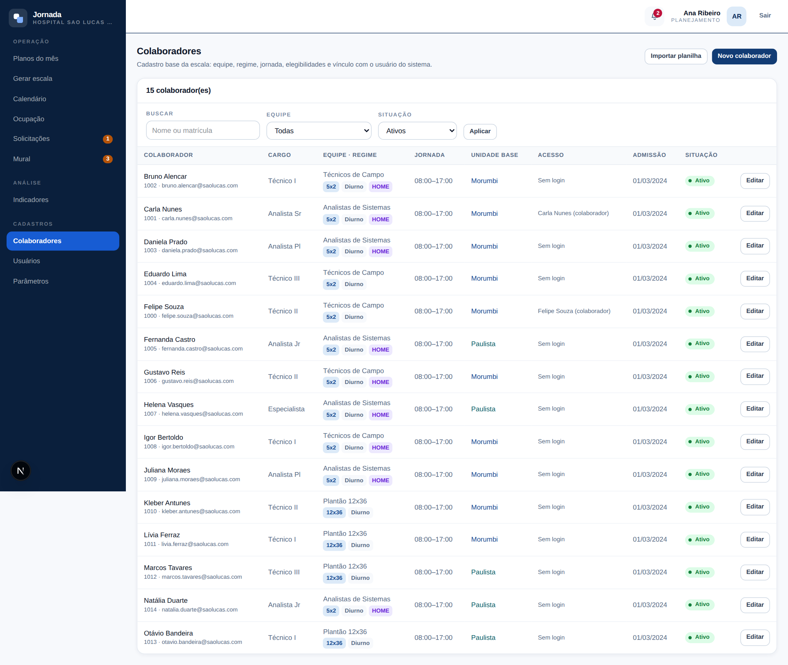
Cadastrar e editar
Novo colaborador abre o formulário em branco no topo da página; Editar abre o mesmo formulário preenchido. Os dois fecham pelo link Fechar, que devolve você à lista com os filtros intactos.
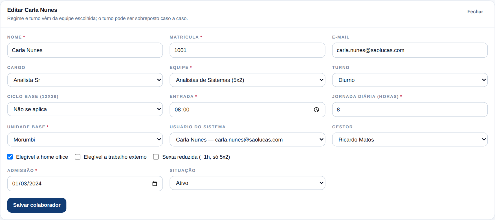
- Nome, Matrícula, E-mail
- Identificação. A matrícula aparece no detalhe do dia e nas exportações.
- Cargo
- Além de informativo, define prioridade: na disputa por uma posição presencial, técnico entra antes de analista; na escolha de dias de home office, analista entra antes de técnico.
- Equipe
- Traz junto o regime (5x2 ou 12x36) e o turno padrão. É também a chave das cotas por equipe.
- Turno
- Diurno ou noturno. Sobrepõe o turno da equipe só para esta pessoa.
- Ciclo base (12x36)
- Ímpares ou pares. Só se aplica a quem é 12x36 — define em quais dias do mês a pessoa faz plantão. Fica Não se aplica para quem é 5x2.
- Entrada e Jornada diária
- Montam a faixa horária mostrada na escala. Jornada acima de 6 h soma 1 h de intervalo no horário de saída.
- Unidade base
- Onde a pessoa cai quando não há plano do mês configurado para ela: 100% na unidade base.
- Usuário do sistema
- Liga o cadastro ao login. Sem esse vínculo a pessoa entra no sistema mas a tela Minha escala não tem o que mostrar.
- Gestor
- Quem recebe as solicitações desta pessoa depois da triagem.
- Elegível a home office
- Porteiro da regra: sem esta caixa marcada, a seção de home office do plano do mês fica desligada e o motor nunca escala home para a pessoa.
- Elegível a trabalho externo
- Permite que a pessoa seja alocada como Trabalho Externo quando não sobra posição em nenhuma unidade.
- Sexta reduzida (−1 h, só 5x2)
- Encurta a jornada de sexta em uma hora no horário mostrado.
- Admissão
- Data de entrada. O desligamento nunca pode ser anterior a ela.
- Situação
- Ativo é o que entra na geração. Inativo abre o campo de motivo — ver abaixo.
Inativar alguém
Marcar Inativo abre a pergunta que importa: por quê. A data de desligamento aparece só quando o motivo é Desligamento — é o único que encerra o vínculo, e nos outros ela não quer dizer nada.
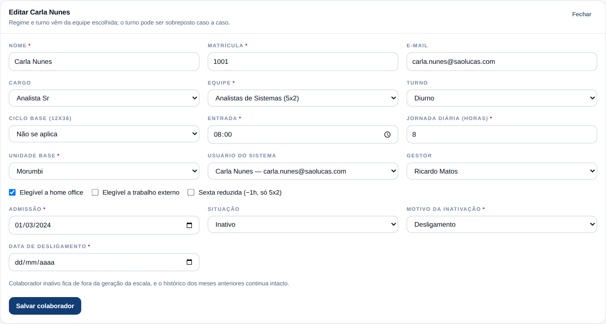
| Motivo | Efeito |
|---|---|
| Desligamento | Encerra o vínculo. Pede a data e a grava. |
| Afastamento pelo INSS | Fica fora da geração; volta mudando a situação para Ativo. |
| Licença sem vencimento | Idem. |
| Licença maternidade ou paternidade | Idem. |
| Transferência para outra área | Idem. |
| Cedido a outra unidade | Idem. |
| Outro | Idem — descreva na justificativa do log. |
Não apague quem saiu. Mude a situação para Desligado e preencha a data. Apagar o cadastro leva junto o histórico de escalas, ocorrências e solicitações daquela pessoa.
Usuários e acesso Planejamento
Colaborador e usuário são coisas diferentes. O colaborador é quem entra na escala; o usuário é quem faz login. A maioria das pessoas é as duas coisas, ligadas pelo campo Usuário do sistema do cadastro — mas nem todo colaborador precisa de login, e nem todo usuário aparece na escala.
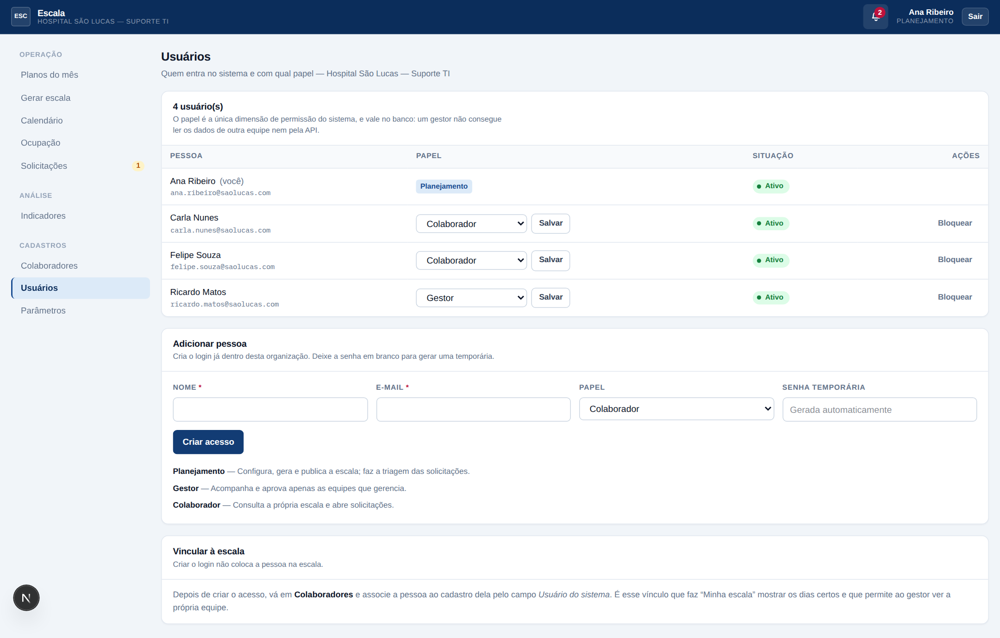
Convidar cria o acesso já dentro da sua conta, com o papel escolhido. A pessoa recebe uma senha provisória e é obrigada a trocá-la no primeiro acesso.
Papel se muda com cuidado. Promover alguém a Planejamento dá acesso a toda a conta — cadastros, escala de todo mundo e dados pessoais. Gestor é o papel certo para quem só precisa aprovar a própria equipe.
Parâmetros Planejamento
São as regras da casa. Você mexe pouco aqui — mas quase toda surpresa na geração se explica por algo desta tela.
A página tem cinco abas: Unidades e capacidade, Equipes, Feriados, Regras do motor e Auditoria e LGPD. A primeira reúne quatro blocos, do mais geral ao mais específico.
Unidades
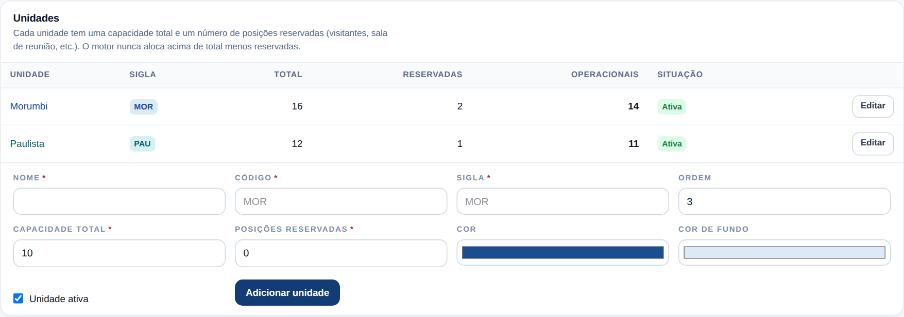
- Nome, Código, Sigla
- A sigla é o que aparece nas células do calendário — MOR, PAU. Curta funciona melhor.
- Ordem
- Posição da unidade nas listas e no calendário.
- Capacidade total
- Quantos lugares o prédio tem.
- Posições reservadas
- Quantos desses lugares não entram na escala: visitantes, sala de reunião, treinamento. O motor nunca aloca acima de total menos reservadas.
- Cor e Cor de fundo
- Identidade visual da unidade no calendário e nos gráficos.
- Unidade ativa
- Desmarcar tira a unidade da geração sem apagar o histórico.
Capacidade e posições reservadas por dia
A capacidade da unidade é a regra geral. Este bloco cria exceções: toda segunda, toda sexta, ou uma data exata. É aqui que se diz "na segunda eu guardo mais duas posições porque tem reunião".
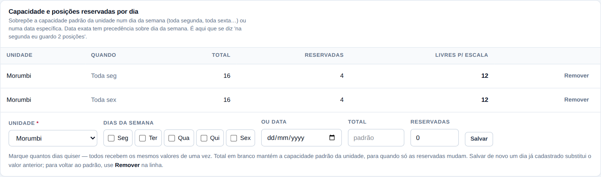
- Marque quantos dias da semana quiser de uma vez — todos recebem os mesmos valores.
- Data exata tem precedência sobre dia da semana. Um feriado municipal específico vence a regra de "toda sexta".
- Total em branco mantém a capacidade padrão da unidade — use quando só as reservadas mudam.
- Salvar de novo um dia já cadastrado substitui o valor anterior. Para voltar ao padrão, use Remover na linha.
Cota de posições por equipe
Reparte as posições de uma unidade entre as equipes. Sem cota, uma equipe grande pode ocupar o prédio inteiro num dia cheio e deixar a outra sem lugar.
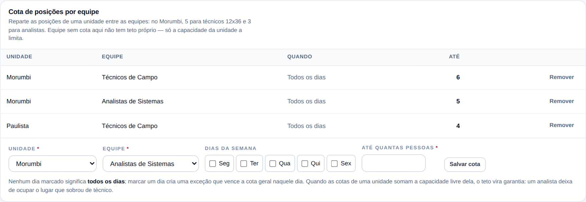
- Nenhum dia marcado significa todos os dias. Marcar um dia cria uma exceção que vence a cota geral naquele dia.
- Equipe sem cota não tem teto próprio — só a capacidade da unidade a limita.
- Quando as cotas de uma unidade somam a capacidade livre dela, o teto vira garantia: a vaga reservada a uma equipe não é ocupada por outra.
Postos dentro das unidades
Um posto é uma função exercida dentro da unidade — o Corpo Clínico dentro do Morumbi. Não é outra unidade: quem cobre o posto ocupa uma posição normal do Morumbi, então capacidade e rateio percentual não mudam.
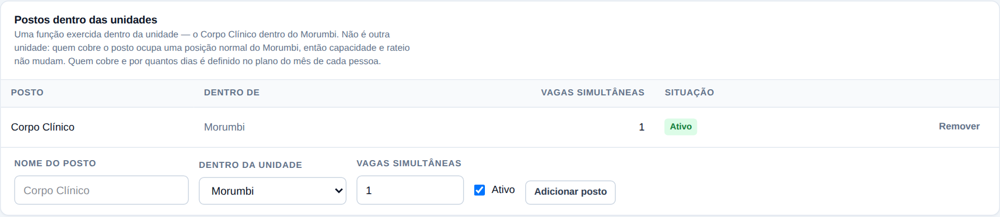
Vagas simultâneas é quantas pessoas o posto comporta no mesmo dia. Com 1 vaga, duas pessoas nunca são escaladas para o Corpo Clínico no mesmo dia — a segunda vira conflito na geração.
Regras do motor
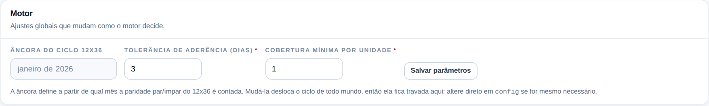
- Âncora do ciclo 12x36
- O mês a partir do qual a paridade par/ímpar do 12x36 é contada. Mudá-la desloca o ciclo de todo mundo, então o campo fica travado na tela.
- Tolerância de aderência (dias)
- De quanto o resultado pode fugir do percentual planejado, em dias, antes de a pessoa deixar de contar como aderente. Com tolerância 3, quem planejou 10 dias no Morumbi e recebeu 12 continua aderente. Não muda a alocação — muda só o indicador Aderência ao plano.
- Cobertura mínima por unidade
- Piso de pessoas por unidade em cada dia em que alguém trabalha. O motor destaca para a unidade descoberta quem estiver mais atrasado na meta dela; se ninguém no mês estiver planejado para essa unidade, ele avisa em vez de inventar uma alocação.
Equipes
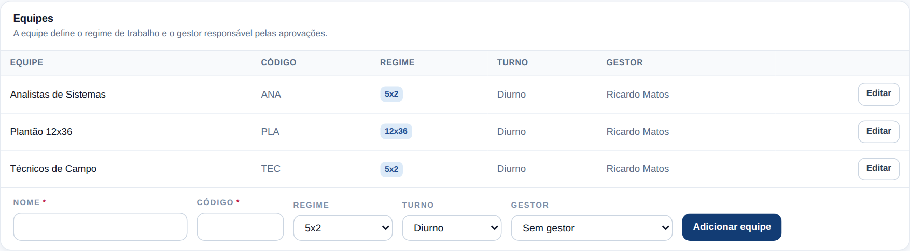
Trocar o regime de uma equipe muda o regime de todo mundo que está nela no próximo mês gerado. Trocar o gestor muda para onde vão as próximas solicitações — as que já estão em andamento continuam com quem as recebeu.
Feriados
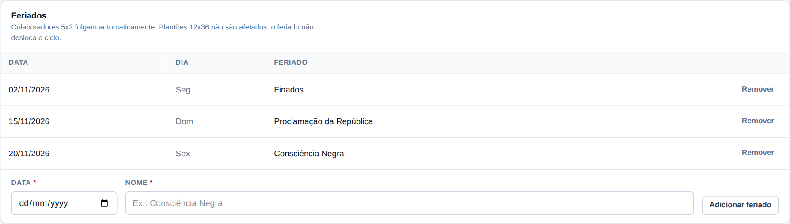
Lance os feriados antes de gerar. Um feriado cadastrado depois não reescreve sozinho a escala já gerada — é preciso gerar de novo. Feriado esquecido aparece como um dia útil comum, com gente escalada presencialmente.
Auditoria e LGPD
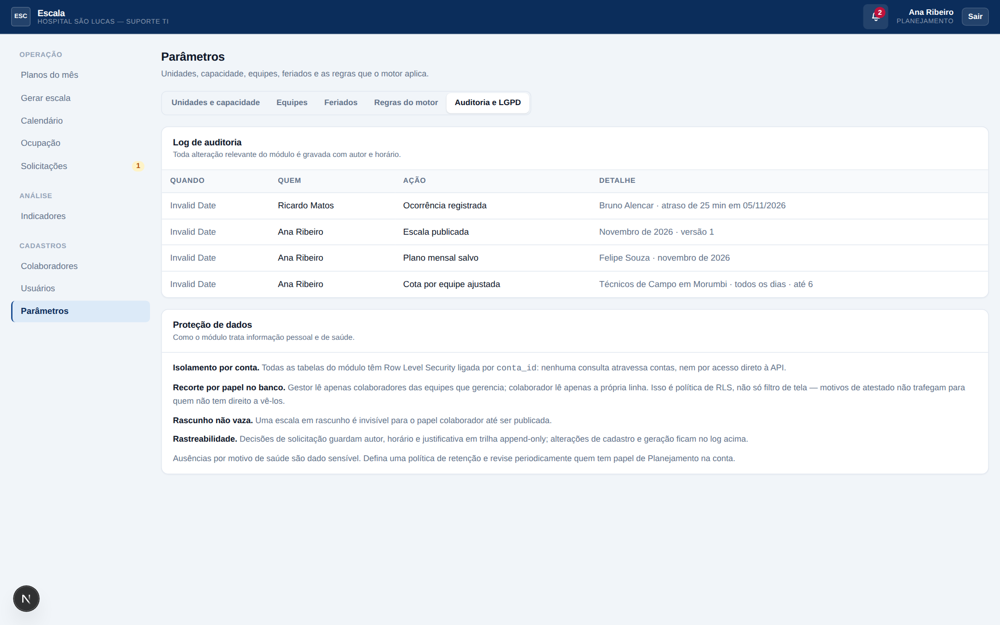
O log é somente leitura e serve para responder "quem mudou isso e quando". A seção de proteção de dados descreve que informação pessoal o módulo guarda e por quê.
Plano do mês Planejamento
É aqui que o mês é realmente decidido. Tudo o que o motor faz depois sai daqui.
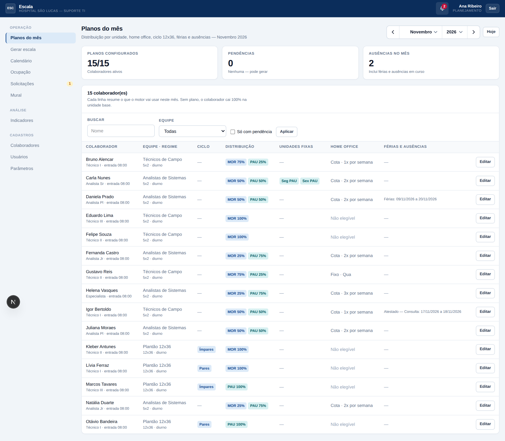
Os três cartões do topo respondem, em ordem, às três perguntas do começo do mês:
- Planos em vigor
- Quantas pessoas ativas têm plano valendo neste mês, e quantos desses vieram herdados. Falta alguém? A linha dela está na tabela, sem distribuição.
- Pendências
- Erros de configuração que bloqueiam a geração. Enquanto for maior que zero, a tela de geração não simula.
- Ausências no mês
- Férias e ausências que tocam este mês, inclusive as que começaram no mês anterior.
O plano se carrega de um mês para o outro
Distribuição entre unidades, home office, unidade fixa e posto são configuração recorrente: mudam de vez em quando, não todo mês. Quem não tem plano deste mês continua valendo o do mês anterior — a linha dela na tabela traz a etiqueta herda mês/ano, e o editor abre já com as regras herdadas, avisando de onde vieram.
Férias e ausências nunca são herdadas. Elas são eventos datados e vêm exclusivamente das solicitações aprovadas. Repetir as férias de novembro em dezembro marcaria de férias quem já voltou.
Salvar o plano fixa uma cópia neste mês; a partir daí, editar o mês de origem não mexe mais aqui. O botão Fixar aqui as regras de mês anterior faz isso de uma vez para todo mundo que está herdando.
O editor de plano
Editar na linha da pessoa abre o editor no topo da página. Ele tem cinco seções, na ordem em que o motor as considera.
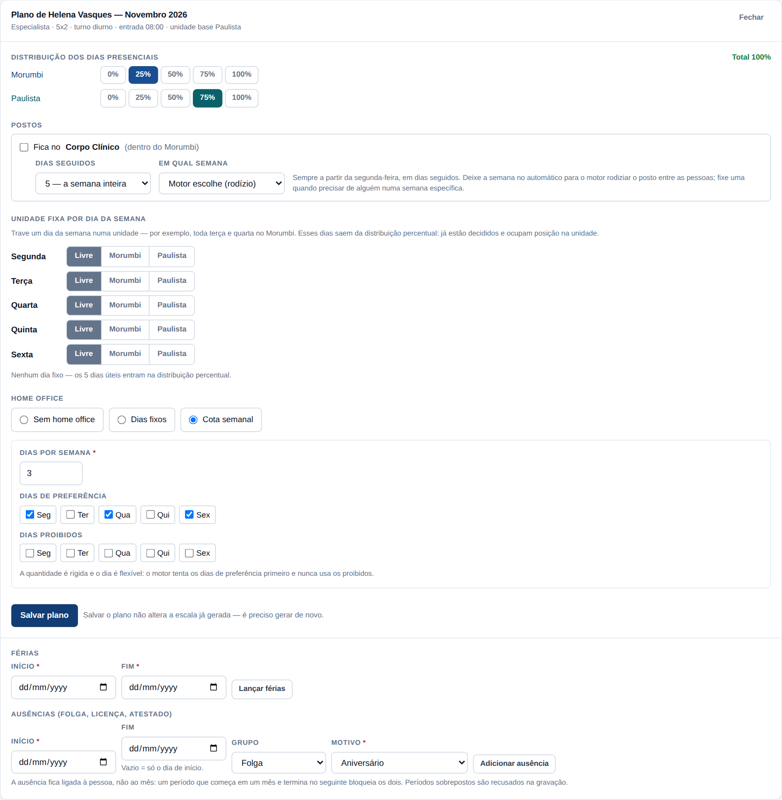
1. Distribuição dos dias presenciais
Os botões de percentual dizem que fatia dos dias presenciais da pessoa vai para cada unidade. O indicador Total à direita precisa fechar em 100% — se não fechar, vira pendência e trava a geração.
A conta é feita sobre os dias que sobraram: fim de semana, feriado, férias, home office fixo e unidade fixa saem da conta antes do rateio. Por isso 50/50 não significa 15 dias em cada lugar, e sim metade do que restou.
2. Postos
Marque Fica no posto para destacar a pessoa. Dois campos controlam o bloco:
- Dias seguidos
- Quantos dias úteis consecutivos, sempre a partir da segunda-feira. 5 é a semana inteira.
- Em qual semana
- Motor escolhe (rodízio) deixa o sistema distribuir o posto entre as pessoas ao longo do mês. Fixar uma semana serve para quando alguém precisa estar lá numa semana específica.
O bloco só é aceito se a pessoa estiver presencial em todos os dias dele. Um bloco que cairia em cima de férias, feriado ou dia de folga do 12x36 não é montado pela metade — vira conflito, com o motivo escrito.
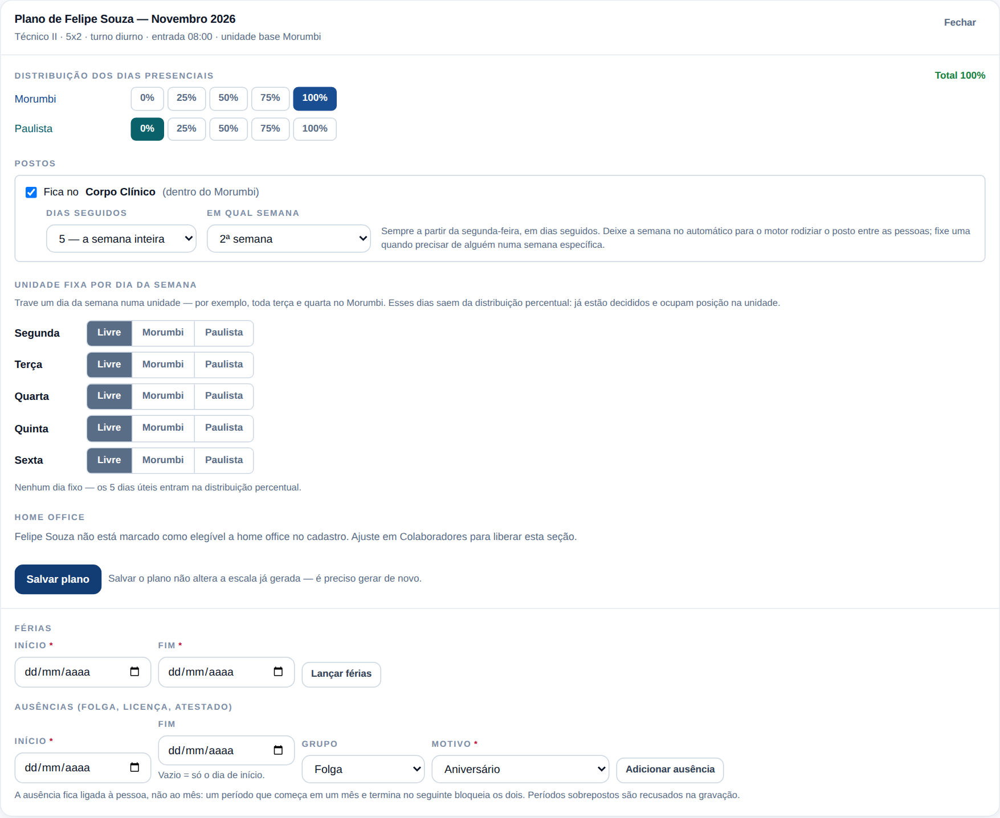
3. Unidade fixa por dia da semana
Trava um dia da semana numa unidade — toda segunda e toda sexta na Paulista, por exemplo. Esses dias saem do rateio percentual: já estão decididos, e ocupam posição na unidade normalmente.
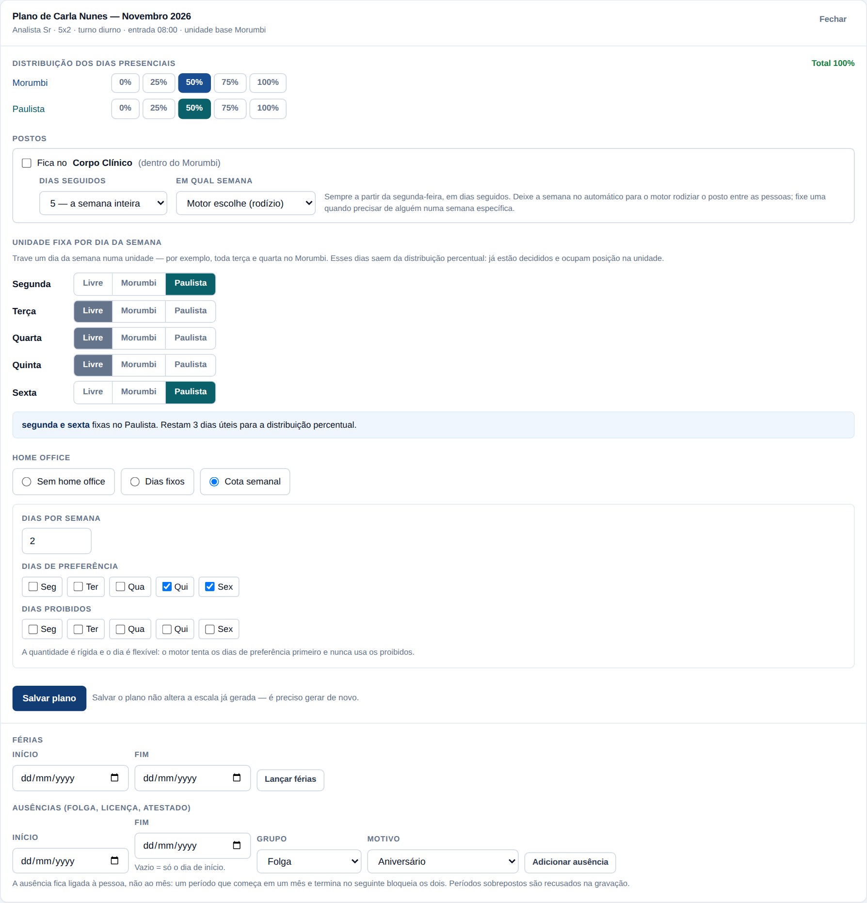
4. Home office
Três modos, e a seção só aparece para quem é elegível no cadastro:
- Sem home office
- A pessoa é presencial todos os dias úteis.
- Dias fixos
- Sempre os mesmos dias da semana. Simples e previsível — mas cuidado para não marcar o mesmo dia como unidade fixa, o que é a pendência mais comum do sistema.
- Cota semanal
- Uma quantidade por semana, com o dia escolhido pelo motor. Dias de preferência é onde a pessoa quer ficar; dias proibidos nunca são usados.
5. Férias e ausências
- Férias pede início e fim. É bloqueio absoluto: nenhuma outra regra reabre o dia.
- Ausência — folga, licença, atestado — pede início, fim, grupo e motivo. Fim em branco significa só o dia de início.
- A ausência fica ligada à pessoa, não ao mês: um período que começa em outubro e termina em novembro bloqueia os dois.
- Períodos sobrepostos são recusados na gravação, com a mensagem dizendo qual período conflita.
Pendências
A caixa Só com pendência filtra a tabela para o que está travando o mês. A mensagem em vermelho fica embaixo do nome da pessoa.
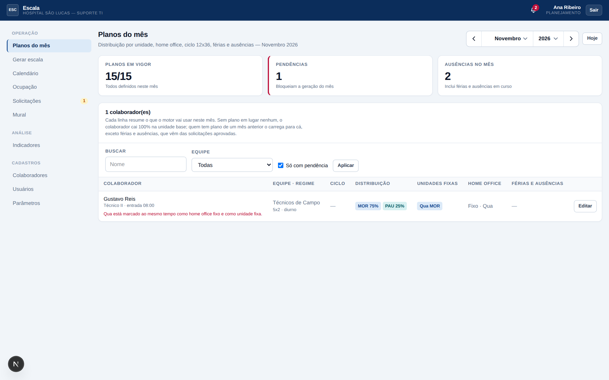
As pendências mais comuns e o que fazer:
| Mensagem | Correção |
|---|---|
| A distribuição entre unidades soma x% | Ajuste os percentuais até o Total fechar 100%. |
| Sem plano configurado para o mês | Abra o plano da pessoa, ou use Copiar de mês anterior. |
| Dia está marcado ao mesmo tempo como home office fixo e como unidade fixa | Escolha um dos dois para aquele dia da semana. |
| Regime 12x36 sem ciclo definido para o mês | Escolha ímpares ou pares no plano. |
| Home office configurado, mas o colaborador não está marcado como elegível | Marque a elegibilidade no cadastro, ou tire o home office do plano. |
| Ausência sem grupo ou motivo preenchido | Reabra a ausência e complete os campos. |
Salvar o plano não altera a escala já gerada. É preciso gerar de novo. O aviso está escrito ao lado do botão, e é o engano mais frequente de quem está começando.
Gerar e publicar Planejamento
Simular não grava nada. É a tela onde você vê o mês inteiro antes de assumi-lo.
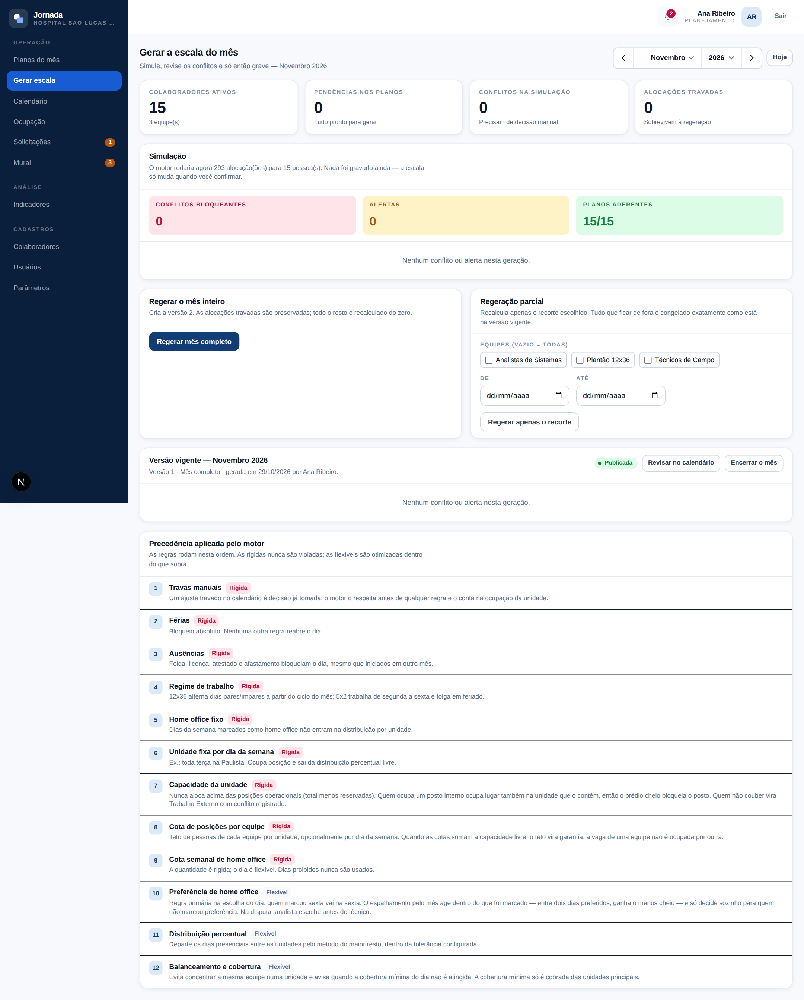
Os quatro cartões
- Colaboradores ativos
- Quem entra na geração, e em quantas equipes.
- Pendências nos planos
- Enquanto for maior que zero, não há simulação: corrija em Planos do mês.
- Conflitos na simulação
- Situações que o motor não conseguiu resolver e que precisam de decisão manual.
- Alocações travadas
- Ajustes manuais que você travou no calendário. Sobrevivem à regeração — o motor os respeita e conta na ocupação.
Conflitos e alertas
A simulação separa dois níveis, e a diferença importa:
- Conflitos bloqueantes — o motor chegou num ponto sem saída: ninguém coube na unidade, o posto não tinha semana livre, duas travas manuais estouraram a capacidade do dia. Cada linha nomeia a pessoa, a data e o motivo.
- Alertas — a escala é válida, mas alguma coisa não saiu como o plano pedia: uma cota de home office que não coube na semana, uma unidade abaixo da cobertura mínima. Vale ler antes de publicar; não impede nada.
Planos aderentes conta quantas pessoas terminariam o mês dentro da tolerância configurada em relação ao percentual planejado.
Gerar
Há duas formas de gerar, e a segunda é a que salva o dia perto do fim do mês:
- Regerar mês completo
- Cria uma nova versão do mês inteiro. As alocações travadas são preservadas; todo o resto é recalculado do zero.
- Regeração parcial
- Recalcula só o recorte escolhido — uma ou mais equipes, um intervalo de datas, ou os dois. Tudo que ficar de fora é congelado exatamente como está na versão vigente. É o jeito de refazer a última semana de uma equipe sem mexer no mês que já foi combinado com todo mundo.
Publicar e encerrar
O bloco Versão vigente mostra o estado atual: número da versão, escopo, quem gerou e quando, e o selo Rascunho ou Publicada.
- Rascunho — o colaborador já vê a escala, com um aviso de que as datas podem mudar.
- Publicada — vira a referência oficial. É o que o gestor cobra e o colaborador organiza a vida em cima. Ainda pode ser ajustada, pelo Planejamento e pelo gestor da equipe, mas agora cada alteração avisa quem depende dela — ver Alterar uma escala já publicada.
- Encerrar o mês — fecha a competência. A escala vira somente leitura e para de aceitar ajuste manual. Use quando o mês acabou e você não quer alteração retroativa.
Quando a geração está bloqueada
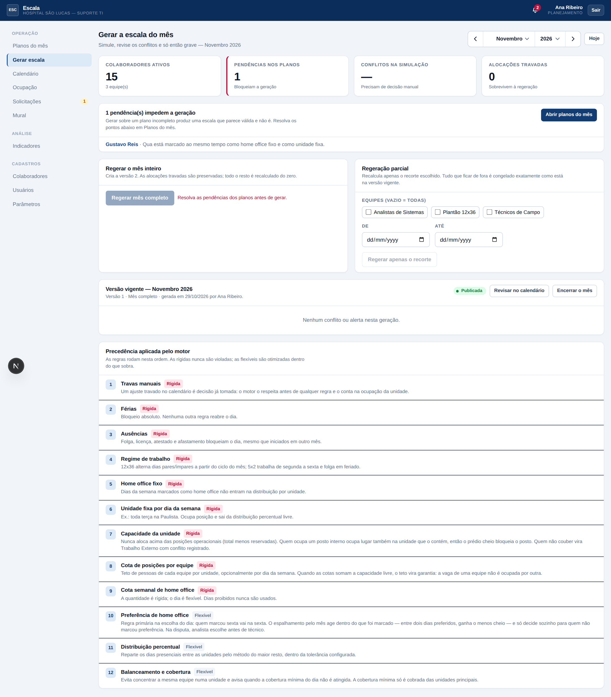
Calendário e ajustes Planejamento
A escala pronta, em três formas de olhar: o mês, a grade e o dia.
Vista de mês
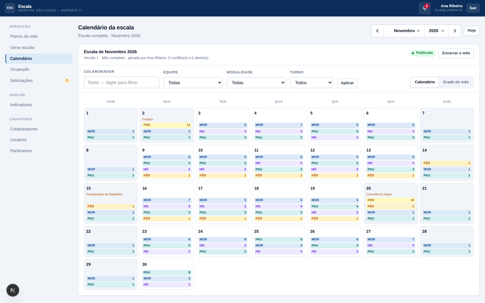
É a visão de conferência rápida: dá para ver de longe se algum dia ficou vazio, se as duas unidades estão equilibradas, e se os feriados foram respeitados. Clicar num dia abre o detalhe dele.
Grade do mês
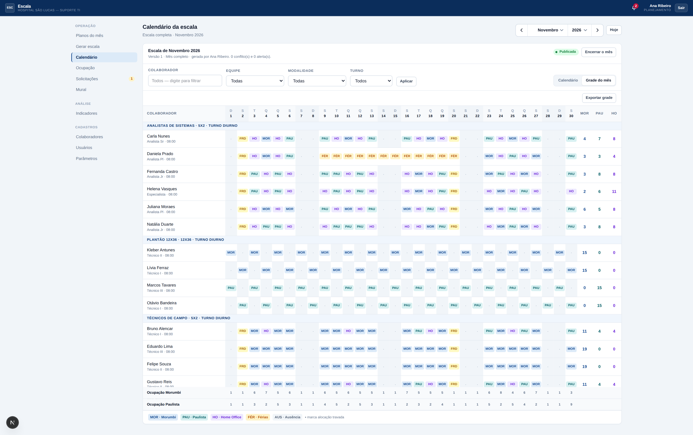
É a visão clássica de escala, agrupada por equipe. Serve para conferir o padrão de uma pessoa ao longo do mês — se o 12x36 está alternando direito, se o home office ficou espalhado, se as férias cobrem o período certo. O ponto · marca uma alocação travada, e Exportar grade baixa a mesma tabela.
Detalhe do dia
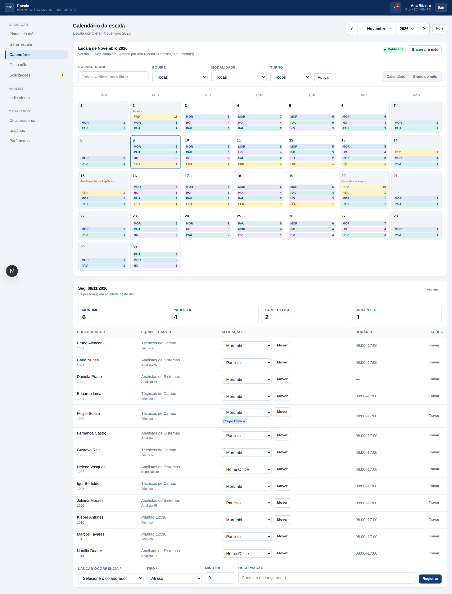
É a tela do ajuste fino. A tabela mostra o estado — quem está onde, o horário, o posto, as ocorrências do dia — e cada linha tem um botão Ajustar que abre uma gaveta logo abaixo dela, com três assuntos separados:
- Alocação — mover a pessoa para outra unidade ou modalidade: Home Office, Trabalho Externo, Evento, Treinamento, Folga, Afastamento.
- Trava — decisão tomada. O motor a respeita antes de qualquer outra regra e ela sobrevive a uma nova geração.
- Ocorrência — o que aconteceu no dia, com a pessoa já escolhida.
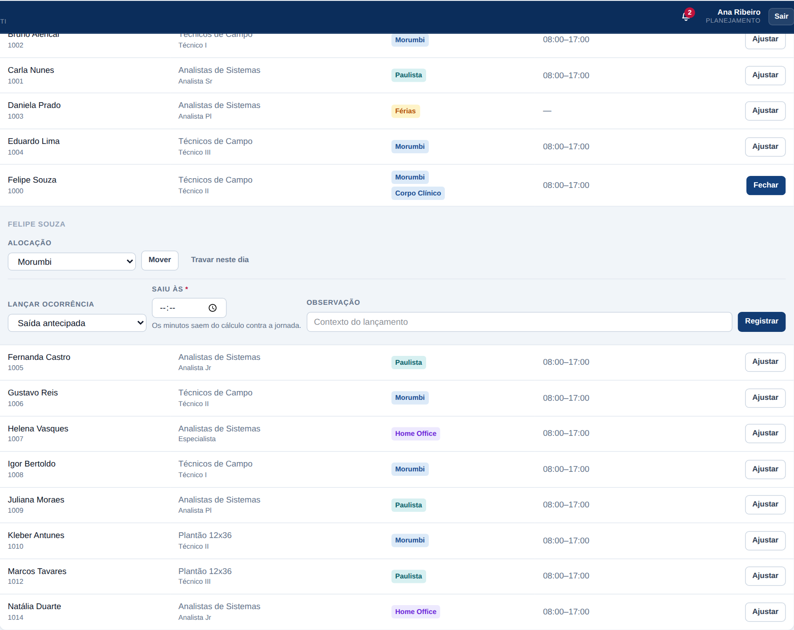
Lançar ocorrência
Os campos mudam conforme o tipo, porque cada tipo mede uma coisa diferente:
| Tipo | O que o sistema pergunta |
|---|---|
| Atraso | Quantos minutos |
| Falta justificada / injustificada | Quantos dias e a data de início |
| Saída antecipada | A hora em que a pessoa saiu — os minutos saem do cálculo contra a jornada dela |
| Pausa excedida | Quantos minutos |
| Ausência de marcação | Só a observação, que passa a ser obrigatória |
| Troca realizada | Com quem foi a troca, escolhido entre quem trabalha naquele dia |
| Observação | Só a caixa de texto |
Em Saída antecipada você informa a hora; quantos minutos isso deu é conta do sistema, contra a jornada da pessoa naquele dia.
Ocorrência só existe em escala publicada. Enquanto o mês está em rascunho a gaveta traz apenas a alocação e a trava. Ocorrência é registro do que aconteceu, e nada acontece contra uma escala que ninguém viu: em rascunho o dia ainda é hipótese, e lançar o atraso de um turno que pode nem existir na versão publicada só cria registro para apagar depois.
Trava é para exceção, não para rotina. Cada trava é um pedaço da escala que o motor não pode mais otimizar. Se você travou a mesma pessoa no mesmo dia da semana três vezes, o lugar daquela decisão é unidade fixa no plano do mês.
Alterar uma escala já publicada Gestor
Antes de publicar, o Planejamento mexe à vontade: ninguém organizou nada em cima daquilo ainda. Depois de publicar é diferente — mover alguém muda o dia de uma pessoa que já se programou. A escala publicada continua editável, pelo Planejamento e pelo gestor da equipe, mas o que muda vira uma alteração pendente de comunicação.
Na prática: você move as pessoas normalmente, quantas forem preciso. A escala muda na hora — você vê o resultado e os conflitos recalculados a cada movimento — e ninguém é avisado ainda. No topo da tela aparece uma barra com tudo o que está esperando para ser comunicado.
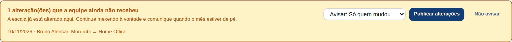
- Mexa o quanto precisar. Cada movimento entra na lista. Mover a mesma pessoa três vezes no mesmo dia conta como uma alteração, do ponto de partida ao destino final.
- Confira os conflitos. O cabeçalho da escala mostra os conflitos e alertas do estado atual, recalculados a cada movimento.
- Escolha quem avisar e clique em Publicar alterações. É o momento em que a equipe recebe.
- Avisar: Só quem mudou
- É o padrão. Cada pessoa movida recebe o aviso no sino, com o dia e o destino. Serve para o ajuste que só afeta ela.
- Avisar: Toda a escala
- Todo mundo com alocação naquele mês recebe. Serve quando mexer em um desloca a rotina dos outros: fechar um andar, cancelar um evento, remanejar um plantão.
- Não avisar
- Esvazia a lista sem mandar nada. A escala continua alterada — o que se descarta é o aviso, não a mudança. Use para correção de digitação, não para mudança de verdade.
Regerar o mês limpa a caixa de saída. As alterações pendentes descrevem movimentos sobre uma versão da escala que a nova geração substituiu; comunicá-las depois avisaria a equipe de mudanças que já foram refeitas ou desfeitas.
Mês encerrado não aceita alteração. Depois de Encerrar o mês, a escala vira somente leitura para os dois papéis. É proposital: alteração retroativa em mês fechado desfaz o fechamento de ponto que já foi feito em cima dele.
Filtros
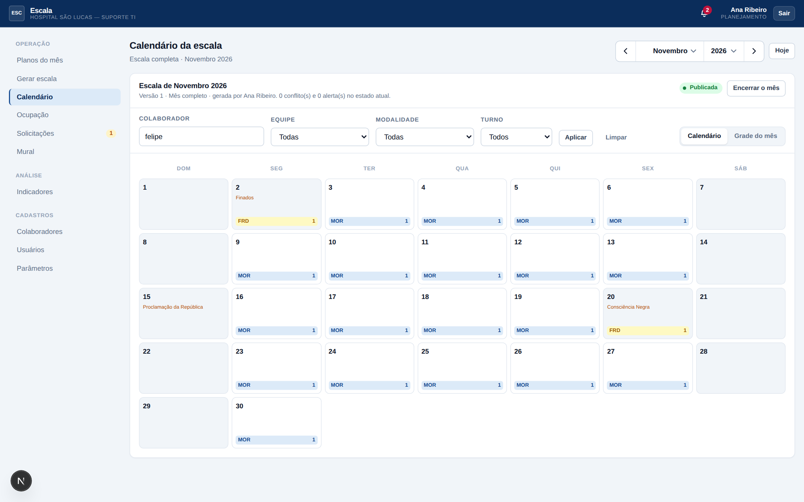
Os quatro filtros — colaborador, equipe, modalidade e turno — podem ser combinados e ficam guardados na URL. "Me mostre todo mundo em home office na sexta" é uma pergunta que se responde aqui, e o endereço resultante pode ser enviado ao gestor.
Ocupação
Quantas posições de cada unidade estão ocupadas, dia a dia.
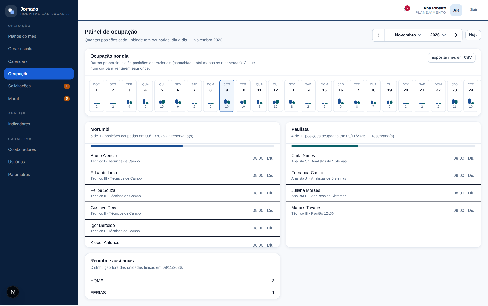
Enquanto o Calendário responde "onde está fulano", a Ocupação responde "quanto do prédio está usado". É a tela de quem negocia espaço: mostra em que dias a unidade fica perto do limite e em que dias sobra sala.
- A faixa do topo cobre o mês inteiro e rola na horizontal.
- Abaixo, um cartão por unidade lista nominalmente quem está lá no dia escolhido, com cargo e horário.
- O cartão Remoto e ausências mostra quem está fora das unidades físicas naquele dia.
- Exportar mês em CSV baixa a ocupação diária para planilha.
Solicitações
Todo pedido segue o mesmo caminho, e o caminho é visível para os três papéis.
O fluxo
A tela do Planejamento
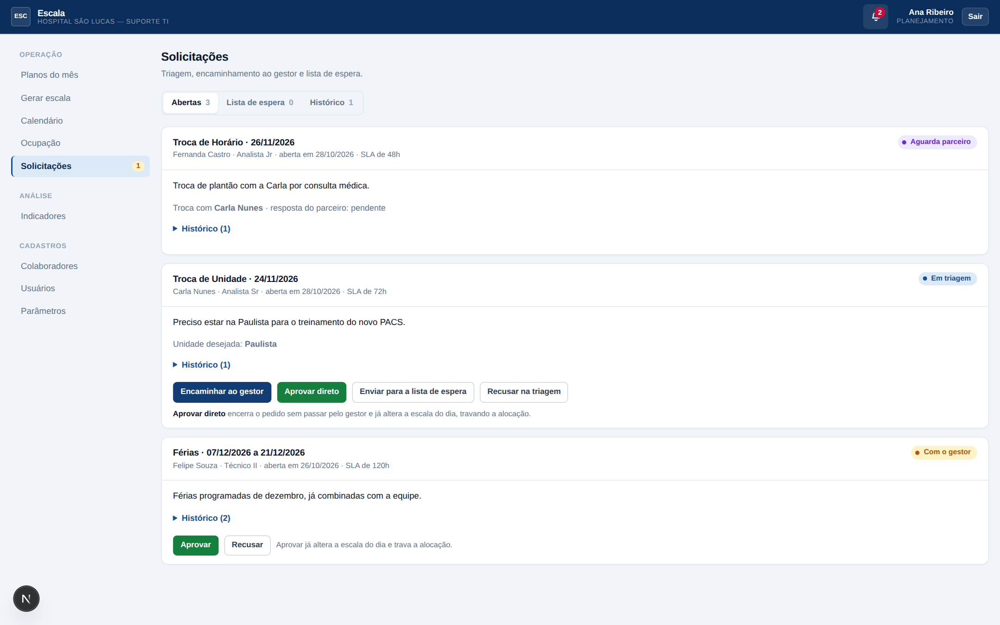
Na triagem há quatro saídas:
- Encaminhar ao gestor
- O caminho normal. O gestor da equipe recebe a notificação e decide.
- Aprovar direto
- Encerra o pedido sem passar pelo gestor e já altera a escala do dia, travando a alocação. Para o que já está resolvido e cuja ida ao gestor só atrasaria a resposta.
- Enviar para a lista de espera
- Quando não cabe agora mas pode caber depois. O pedido ganha posição na fila, que fica visível para quem pediu.
- Recusar na triagem
- Exige motivo. O texto volta para o colaborador na tela dele e na notificação.
As três abas separam o que está vivo do que já passou: Abertas (o que espera decisão), Lista de espera (o que ficou na fila) e Histórico (aprovadas e recusadas).
A tela do gestor
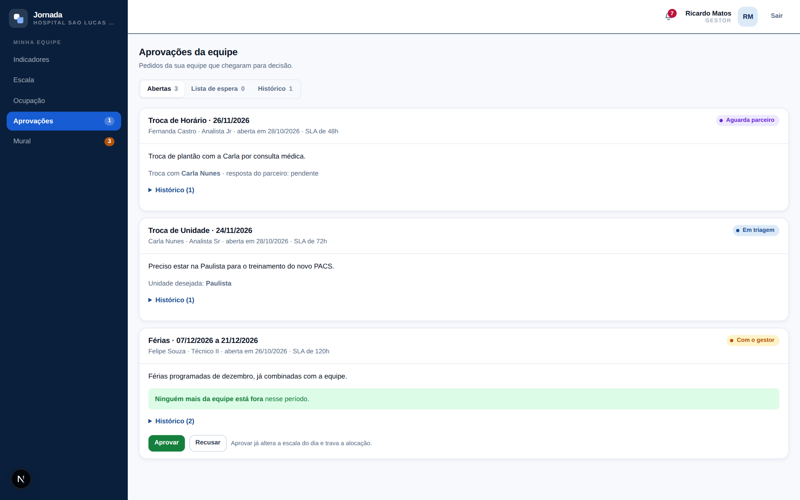
Três ações:
- Aprovar — aplica o pedido na escala e trava a alocação.
- Enviar para a lista de espera — guarda o pedido na ordem de chegada, para os tipos que aceitam fila. Serve para o pedido bom que caiu numa data cheia: recusar apagaria o pedido e obrigaria a pessoa a abrir outro quando a data abrisse.
- Recusar — pede o motivo, que chega a quem pediu.
O histórico do pedido, com cada etapa e quem a executou, fica no próprio cartão sob Histórico.
Férias: quem mais está fora
Num pedido de férias esperando decisão, o cartão mostra quem mais da equipe já tem férias ou ausência que se sobrepõem àquele período, com as datas de cada um — ou avisa, em verde, que ninguém mais está fora. A informação sempre existiu, mas vivia em Planos do mês, uma pessoa e um mês por vez; na prática ninguém saía da decisão para ir buscá-la, e o buraco aparecia na semana da folha.
Os tipos de pedido
| Tipo | O que pede | Efeito quando aprovado |
|---|---|---|
| Férias | Opção de férias e data de início — o fim é calculado | Vira período de férias; os dias do mês já ficam marcados na escala |
| Folga | Motivo, data e (opcional) fim | Vira ausência no período e trava a alocação |
| Licenças | Motivo, início e fim | Vira ausência no período inteiro e trava a alocação |
| Troca de unidade | Data e unidade desejada | Move a pessoa para a unidade escolhida naquele dia |
| Troca de horário | Data | Entra direto na triagem; o Planejamento encontra o par e o registra ao aplicar |
| Ajuste de ponto | Data e justificativa | Registro; não altera a alocação |
Cada tipo tem um SLA próprio, mostrado no cartão — o prazo previsto de resposta. Ele não bloqueia nada; serve para o Planejamento saber o que está atrasando.
Notificações
O sino no topo junta três coisas, em ordem de data:
- Andamento dos pedidos — recortado pelo mesmo mecanismo de acesso das outras telas: o colaborador recebe a devolutiva dos próprios pedidos e os convites de troca; o gestor, o que chega da equipe; o Planejamento, o que entra em triagem.
- Alterações na escala publicada — para quem foi movido, para o gestor da pessoa e, quando quem alterou escolheu Toda a escala, para todo mundo escalado no mês.
- Comunicados novos no mural — um aviso por comunicado, para quem ele se destina.
Cada linha leva ao lugar certo: um aviso de pedido abre a tela de solicitações, um de alteração abre aquele dia no calendário, um de comunicado abre o mural.
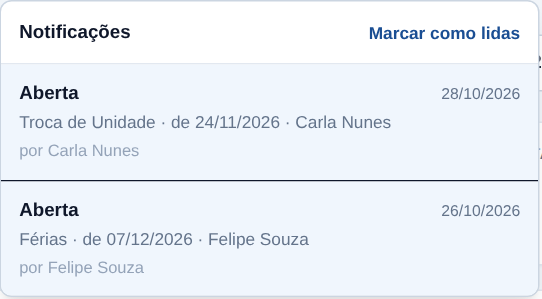
O número vermelho conta as não lidas. Clicar num aviso abre o destino dele e zera o contador no mesmo passo — antes era preciso lembrar de marcar depois, e o número ficava parado mesmo depois de tudo lido. Marcar como lidas continua ali para zerar sem abrir nada. A lista não é apagada em nenhum dos dois casos, e você nunca recebe notificação de uma ação sua.
Mural de comunicados
O mural é o lugar do recado que não é sobre um dia nem sobre uma pessoa: manutenção predial, mudança de processo, data de treinamento, fechamento do mês. Antes esse tipo de aviso circulava por fora do sistema e chegava a metade da equipe.
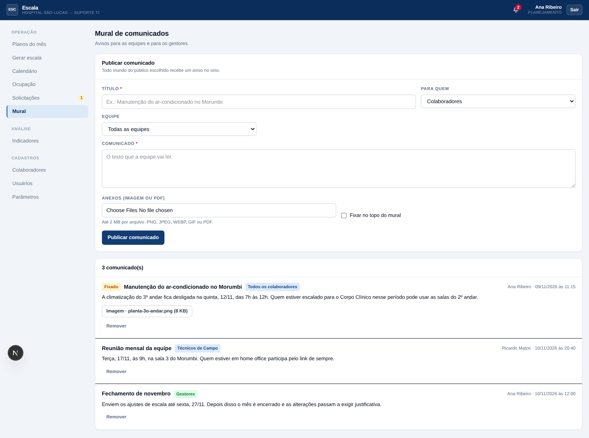
Quem publica para quem
| Papel | Pode publicar para |
|---|---|
| Planejamento | Todos os colaboradores, uma equipe específica, ou os gestores |
| Gestor | A equipe que ele gerencia |
| Colaborador | Não publica — só lê |
Cada pessoa lê o que é dela: o colaborador vê os comunicados para todos e os da equipe dele; o gestor vê o mural dos gestores e também o que foi dito à equipe dele — ser cobrado por um recado que não pôde ler seria o pior arranjo possível; o Planejamento vê tudo. Esse recorte é feito no banco de dados, não na tela, então não depende de a interface esconder a informação certa.
Publicar
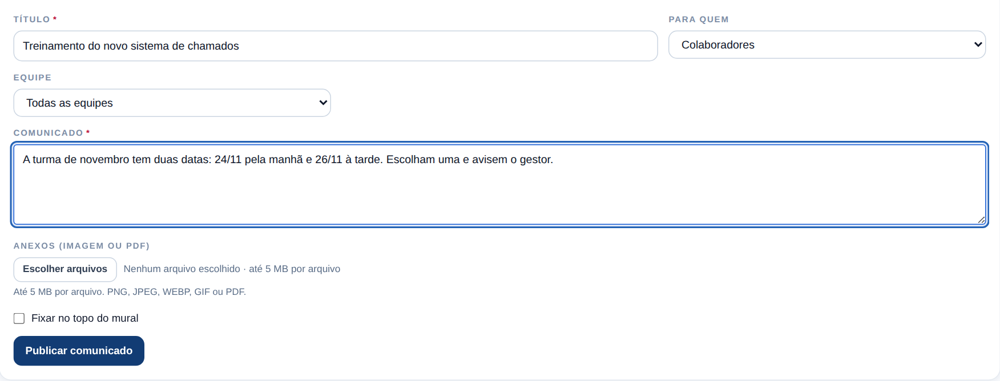
- Título
- Obrigatório. É o que aparece no sino de quem recebe.
- Para quem
- Colaboradores ou gestores. Só o Planejamento escolhe.
- Equipe
- Restringe o comunicado a uma equipe. Em branco, vale para todos os colaboradores.
- Comunicado
- Obrigatório. O texto preserva as quebras de linha.
- Anexos
- Imagem (PNG, JPEG, WEBP, GIF) ou PDF, até 2 MB por arquivo. Pode anexar mais de um.
- Fixar no topo
- Mantém o comunicado acima dos demais, independentemente da data.
Ao publicar, todo mundo do público escolhido recebe um aviso no sino. O anexo abre numa aba nova e só é entregue a quem enxerga o comunicado — não existe link público nem endereço que funcione fora da sessão.
O limite de 2 MB é por arquivo e é conferido duas vezes, no navegador e no servidor. Se o arquivo passa do limite, o botão de publicar fica desabilitado antes do envio — em vez de você subir 8 MB para descobrir no fim e perder o texto digitado. Para um documento maior, publique o resumo e aponte onde ele está.
Ler e remover
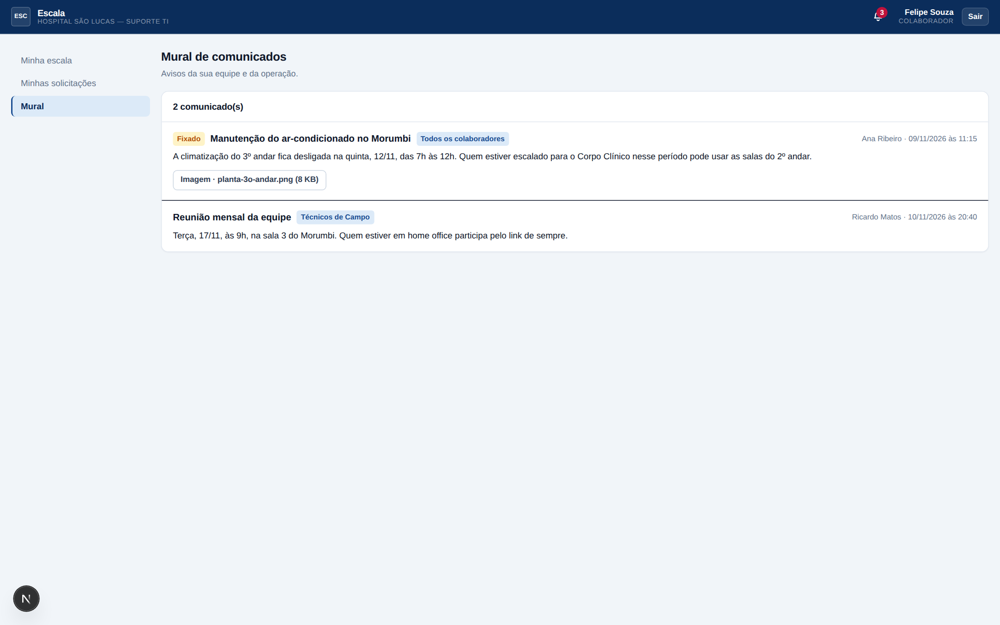
Remover aparece para quem publicou o comunicado e para o Planejamento. Remover apaga também os anexos. Não há edição: um comunicado corrigido pela metade confunde mais do que um comunicado novo — remova e publique de novo.
Indicadores
A tela inicial de quem tem acesso à conta consolida o mês. Todos os números seguem o seletor de competência no topo — indicador vazio quase sempre é mês sem escala gerada.
- Absenteísmo
- Faltas sobre o total de dias escalados no mês.
- Atrasos
- Quantidade de ocorrências de atraso e o total de minutos acumulados.
- Aderência ao plano
- Quantas pessoas terminaram o mês dentro da tolerância em relação ao percentual planejado.
- Solicitações abertas
- O que ainda espera decisão, e o total do período.
- Ocupação média por unidade
- Média nos dias úteis, sobre as posições operacionais. É o número que sustenta uma conversa sobre mudar de andar ou abrir unidade.
- Home office realizado
- Dias efetivamente escalados em casa, por pessoa. Compare com o que foi planejado.
- Ocorrências do mês
- Lançamentos de ponto e intercorrências, com data, tipo, minutos e observação.
Guia do colaborador Colaborador
Três telas: a sua escala, a lista dos seus pedidos e o mural de comunicados.
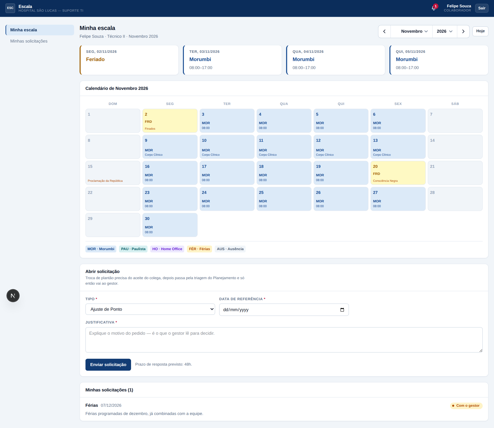
Ler a sua escala
- Os quatro cartões do topo são os próximos dias em que você trabalha, com o local e o horário.
- No calendário, cada dia traz a sigla da unidade e o horário de entrada. Quando você está destacado num posto, o nome dele aparece no lugar do horário.
- A legenda no rodapé traduz as siglas: as unidades, HOME para home office, FÉR para férias e AUS para ausência.
- Se a escala ainda estiver em rascunho, uma faixa amarela avisa que as datas podem mudar.
- Mês sem escala publicada mostra um aviso — você continua podendo abrir solicitações.
Abrir um pedido
- Escolha o tipo. Cada um pede o que precisa e nada além: folga e licença pedem o motivo, troca de unidade pede a unidade, férias pedem a combinação escolhida.
- Informe a data. Nos tipos que cobrem período, é o início.
- Escreva a justificativa. É o texto que o gestor lê para decidir; frase vaga costuma voltar como pedido de esclarecimento.
- Envie. O prazo previsto de resposta aparece ao lado do botão.
Férias
Férias não são um intervalo livre: são uma das combinações fechadas que o RH aceita. Escolha a opção de férias e informe só o início — o fim é calculado a partir dos dias da combinação, e o campo fica travado.
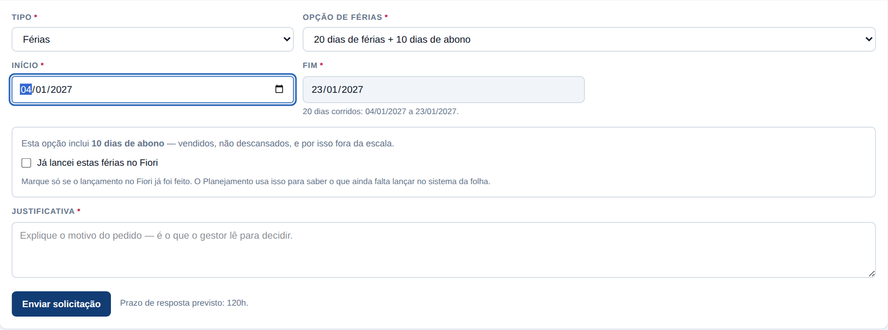
- Abono são dias vendidos, não descansados — ficam fora da escala, e o formulário avisa quando a opção escolhida os inclui.
- Férias parceladas (10+20, 15+5+10…) valem uma solicitação por parcela: cada uma tem a sua data e precisa caber na escala do mês dela. Este pedido cobre a primeira.
- Já lancei no Fiori é o que diz ao Planejamento o que ainda falta lançar no sistema da folha. Marque só se o lançamento realmente já foi feito.
Folga e licença
Os dois pedem o motivo, escolhido da mesma lista que o Planejamento usa ao lançar a ausência — assim o pedido aprovado vira ausência sem ninguém redigitar nada. Folga aceita um dia só (fim em branco); licença exige o período completo.
Troca de horário
Você não escolhe o colega. Peça a troca com a data e a justificativa: quem encontra com quem ela é possível é o Planejamento, ao encaixar na escala, e o par fica registrado na ocorrência Troca realizada. Antes era preciso apontar um nome antes de saber se a troca cabia.
A lista Minhas solicitações mostra o estágio de cada pedido. Quando alguém convida você para uma troca, o cartão ganha o selo Aguarda sua resposta e o botão para responder. Se um pedido for recusado, o motivo aparece escrito no próprio cartão.
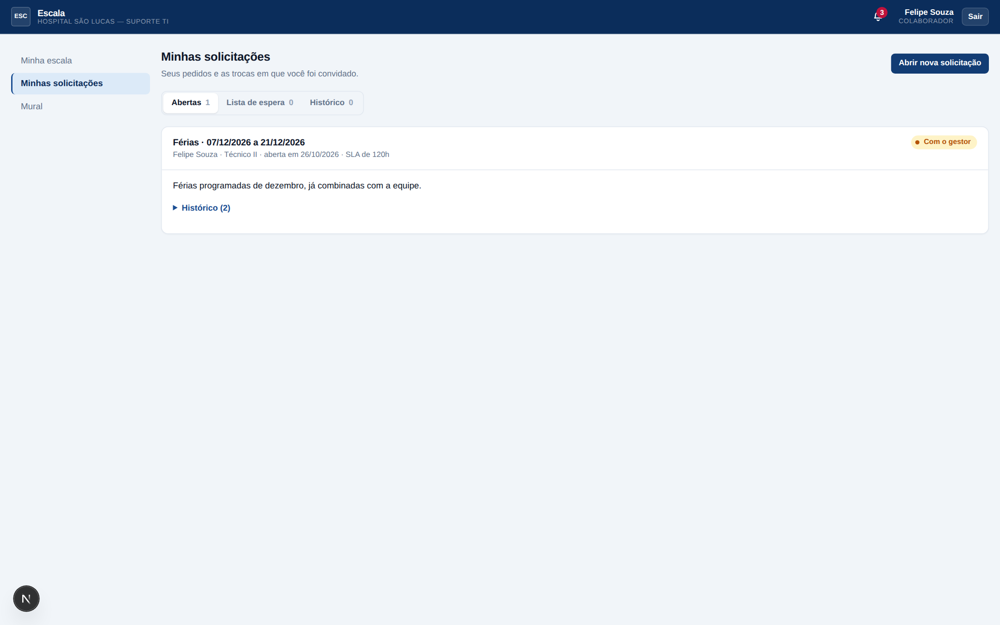
Mural
O terceiro item do menu reúne os comunicados da sua equipe e os da operação, com os anexos que vierem junto. Você não publica nada ali — quando um comunicado novo sai, ele chega no sino. Ver Mural de comunicados.
Quando a sua escala muda
Depois de publicada, a escala ainda pode ser ajustada pelo Planejamento ou pelo seu gestor. Toda alteração que atinge você gera um aviso no sino, dizendo o dia, de onde para onde mudou, e quem mudou. Clicar no aviso abre aquele dia.
O aviso chega quando quem reorganizou termina o trabalho e confirma, não a cada clique dele. Isso é de propósito: uma reorganização de dez linhas mandaria dez avisos, alguns sobre estados que não sobreviveram aos cinco minutos seguintes. Se o seu dia mudou e nenhum aviso chegou, fale com o gestor — alguma coisa saiu do combinado.
Guia do gestor Gestor
Você vê a sua equipe, aprova o que chega da triagem e registra o que aconteceu.
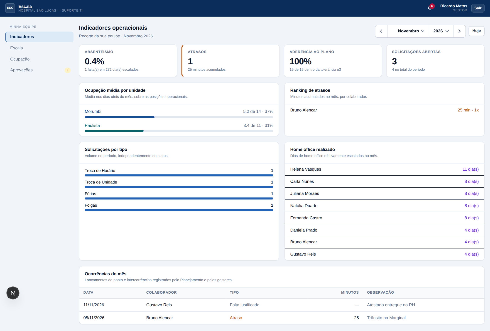
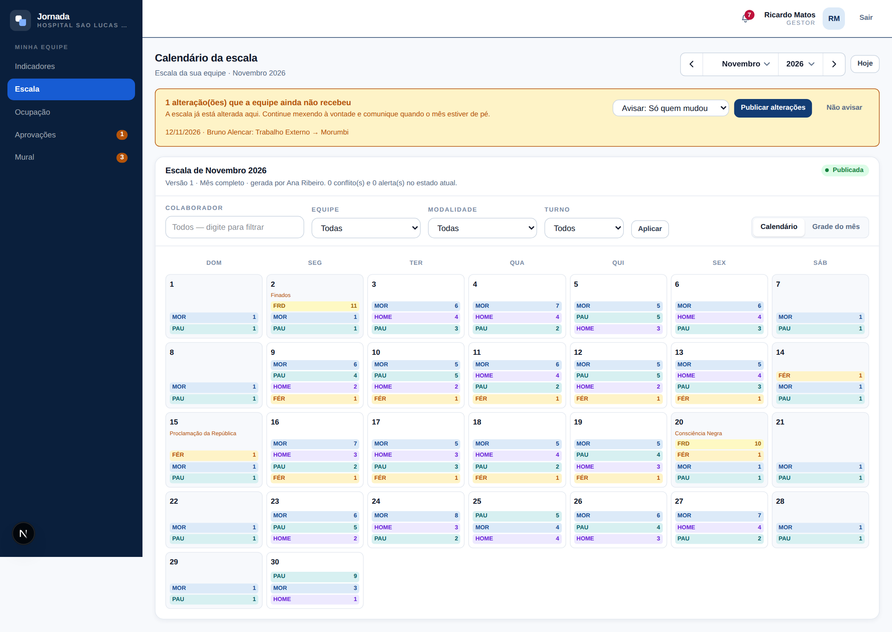
O que você pode fazer
- Decidir as solicitações que a triagem encaminhou: aprovar, mandar para a lista de espera, ou recusar com motivo. A partir do encaminhamento a decisão é sua — o Planejamento vê o cartão, mas não decide por você. Num pedido de férias, o cartão mostra quem mais da equipe já está fora naquele período.
- Consultar o calendário e a ocupação da equipe, no mês que quiser — inclusive as férias já aprovadas de um mês que ainda não foi gerado.
- Lançar ocorrências — atraso, falta justificada, falta não justificada — pelo detalhe do dia, em escala publicada.
- Ajustar a escala publicada da sua equipe, pelo detalhe do dia. As alterações se acumulam e só chegam à equipe quando você clicar em Publicar alterações, escolhendo ali se o aviso vai só para quem mudou ou para toda a escala. Ver Alterar uma escala já publicada.
- Publicar comunicados para a sua equipe, com imagem ou PDF anexado. Ver Mural de comunicados.
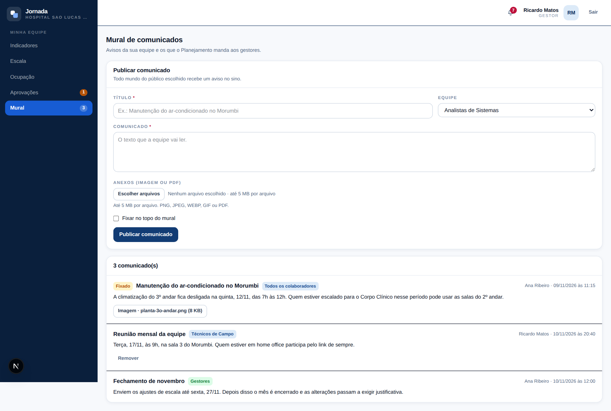
O que não passa por você
Cadastro de pessoas, parâmetros, plano do mês e geração da escala são do Planejamento — e a escala em rascunho, antes de publicada, também. Se a escala da sua equipe precisa mudar de forma estrutural — alguém que deveria estar sempre na outra unidade, uma cota apertada demais —, o caminho é falar com o Planejamento, não ajustar dia a dia.
Como o motor decide
Doze regras, em ordem. As nove primeiras são rígidas: nunca são violadas. As três últimas são otimizadas dentro do que sobra.
- Travas manuaisUm ajuste travado no calendário é decisão já tomada: entra antes de qualquer regra e conta na ocupação da unidade.Rígida
- FériasBloqueio absoluto. Nenhuma outra regra reabre o dia.Rígida
- AusênciasFolga, licença, atestado e afastamento bloqueiam o dia, mesmo que tenham começado em outro mês.Rígida
- Regime de trabalho12x36 alterna dias pares/ímpares a partir do ciclo do mês; 5x2 trabalha de segunda a sexta e folga em feriado.Rígida
- Home office fixoDias da semana marcados como home office não entram na distribuição por unidade.Rígida
- Unidade fixa por dia da semanaOcupa posição na unidade e sai da distribuição percentual livre.Rígida
- Capacidade da unidadeNunca aloca acima das posições operacionais. Quem ocupa um posto interno ocupa lugar também na unidade que o contém, então prédio cheio bloqueia o posto. Quem não couber vira Trabalho Externo, com conflito registrado.Rígida
- Cota de posições por equipeTeto de pessoas de cada equipe por unidade, opcionalmente por dia da semana. Quando as cotas somam a capacidade livre, o teto vira garantia.Rígida
- Cota semanal de home officeA quantidade é rígida; o dia é flexível. Dias proibidos nunca são usados. Em semana encurtada, a cota é rateada pelo tamanho da semana.Rígida
- Preferência de home officeRegra primária na escolha do dia: quem marcou sexta vai na sexta. O espalhamento pelo mês age dentro do que foi marcado — entre dois dias preferidos, ganha o menos cheio — e só decide sozinho para quem não marcou preferência. Na disputa, analista escolhe antes de técnico.Flexível
- Distribuição percentualReparte os dias presenciais entre as unidades pelo método do maior resto, dentro da tolerância configurada.Flexível
- Balanceamento e coberturaEvita concentrar a mesma equipe numa unidade e garante a cobertura mínima do dia, destacando quem está mais atrasado na meta daquela unidade.Flexível
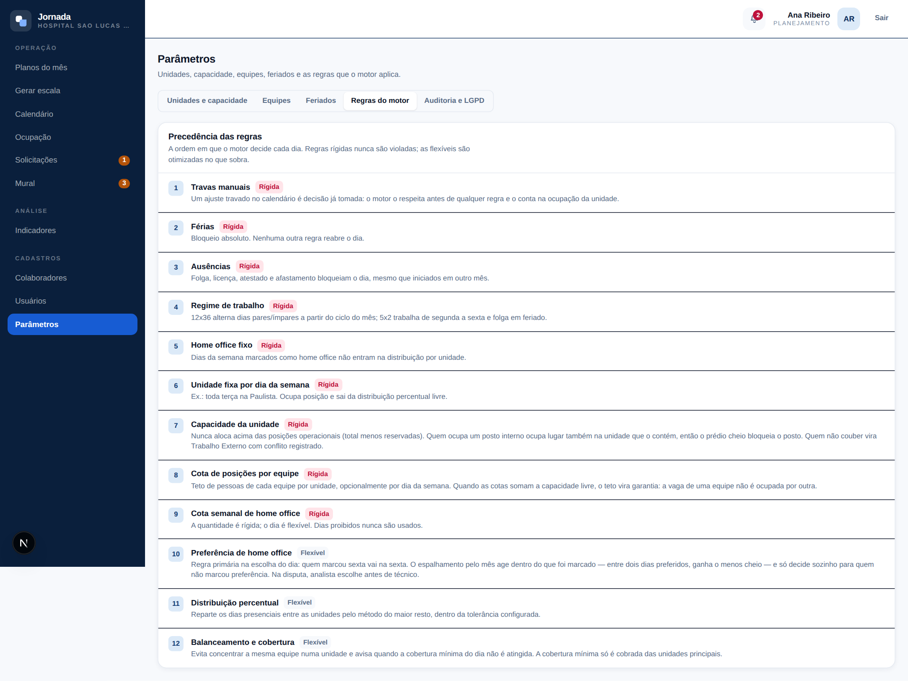
Duas prioridades que valem lembrar
- Técnico tem prioridade na posição presencial. Na disputa por um lugar na unidade, o técnico entra antes do analista — é quem precisa estar perto do equipamento.
- Analista tem prioridade no home office. Na escolha dos dias de casa, o analista escolhe antes.
Quando algo dá errado
A tela está vazia
| Sintoma | Causa provável | O que fazer |
|---|---|---|
| Calendário sem nada | Mês sem escala gerada, ou seletor no mês errado | Confira o mês no topo; se estiver certo, gere a escala |
| Indicadores zerados | Mês sem escala gerada | Use Ir para a geração no próprio aviso |
| "Seu usuário não está vinculado a um colaborador" | O login existe, o cadastro de colaborador não aponta para ele | Planejamento: preencha Usuário do sistema no cadastro da pessoa |
| Colaborador não vê a escala publicada | Escala em rascunho, ou pessoa fora da geração | Publique; confira se a situação dela é Ativo |
A geração não sai como o esperado
| Sintoma | Causa provável | O que fazer |
|---|---|---|
| Alterei o plano e a escala não mudou | Salvar o plano não regera a escala | Vá em Gerar escala e regere |
| Alguém apareceu como Trabalho Externo | Não sobrou posição em nenhuma unidade elegível | Leia o conflito: ele diz se foi lotação ou cota de equipe |
| A distribuição não bateu com o percentual | Dias fixos e ausências saem da conta antes do rateio | Normal. Só investigue se a aderência cair fora da tolerância |
| Uma unidade ficou vazia num dia | Ninguém no mês está planejado para ela | Ajuste a distribuição de alguém, ou reduza a cobertura mínima |
| O posto não foi reservado | Não havia semana com dias seguidos livres | Solte a semana para o rodízio, ou reduza os dias seguidos |
| O 12x36 caiu nos dias errados | Ciclo do mês invertido | Troque ímpares/pares no plano da pessoa |
| Um ajuste manual desapareceu | Nova geração recalculou o dia | Trave o ajuste no detalhe do dia antes de regerar |
Mensagens de erro ao salvar
As mensagens do sistema tentam dizer o que fazer, não só o que falhou. Duas famílias aparecem com frequência:
-
"Rode a migration …" — o banco de dados está numa versão anterior à
do sistema. É tarefa de quem administra a instalação: aplicar os arquivos de
supabase/migrations/que ainda faltam, em ordem. - "Período sobreposto" — a ausência que você tenta gravar cobre dias de outra já existente. A mensagem diz qual.
Glossário
- Competência
- O mês da escala, no formato mês/ano. Quase toda tela é filtrada por ela.
- Unidade
- Um local físico com número finito de posições.
- Posições operacionais
- Capacidade total menos as reservadas. É o teto que o motor respeita.
- Posto
- Uma função exercida dentro de uma unidade. Ocupa uma posição normal dela.
- Equipe
- Agrupamento que carrega o regime de trabalho e o gestor responsável.
- Regime
- 5x2 (segunda a sexta) ou 12x36 (plantão em dias alternados).
- Ciclo
- No 12x36, se a pessoa trabalha nos dias ímpares ou pares do mês.
- Âncora do ciclo
- O mês a partir do qual a paridade do 12x36 é contada.
- Plano do mês
- O conjunto de decisões de uma pessoa para uma competência: distribuição, home office, unidade fixa, posto, ausências.
- Distribuição
- O percentual dos dias presenciais que vai para cada unidade.
- Unidade fixa
- Dia da semana travado numa unidade, fora do rateio percentual.
- Cota de home office
- Quantidade de dias de casa por semana, com o dia escolhido pelo motor.
- Cota por equipe
- Teto de pessoas de uma equipe numa unidade.
- Cobertura mínima
- Piso de pessoas por unidade em cada dia com atividade.
- Aderência
- Quanto o resultado ficou perto do percentual planejado, dentro da tolerância.
- Pendência
- Erro de configuração no plano que bloqueia a geração.
- Conflito
- Situação que o motor não conseguiu resolver e que precisa de decisão manual.
- Alerta
- Aviso de que algo não saiu como planejado, sem invalidar a escala.
- Trava
- Alocação marcada como decisão final; sobrevive a uma nova geração.
- Versão
- Cada geração cria uma nova versão do mês. A vigente é a que vale.
- Rascunho / Publicada / Encerrada
- Os três estados da escala do mês.
- SLA
- Prazo previsto de resposta de um tipo de solicitação.
- Aviso
- Item do sino com destinatário nomeado: alteração na escala publicada ou comunicado novo. Diferente do andamento de um pedido, que o sino também mostra.
- Alcance do aviso
- Ao mover alguém numa escala publicada: se o aviso vai só para quem mudou ou para toda a escala do mês. O gestor da pessoa recebe nos dois casos.
- Comunicado
- Recado publicado no mural, com público (colaboradores ou gestores), equipe opcional e anexos.
- Alteração pendente
- Mudança feita numa escala publicada e ainda não comunicada à equipe. A escala já mudou; o aviso é que espera.
- Plano herdado
- Plano de um mês anterior que continua valendo neste, por não ter sido substituído. Não inclui férias nem ausências.
- Trabalho externo
- Modalidade de quem trabalha fora das unidades — inclusive quando não sobrou posição para a pessoa.